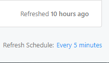

Issue Summary
Hello, I have a problem with my self hostedRedash v10. After an update from v10, none of the scheduled queries worked automatically.
Technical details:
- Redash Version: 10.0.0
- Browser/OS: Chrome
- How did you install Redash: Docker on AWS
Hello, I have a problem with my self hostedRedash v10. After an update from v10, none of the scheduled queries worked automatically.
There is not enough information here to help you.
Do you have any worker services running?
Please share your docker-compose.yml file.
Hello jesse, thank you for quick reply
Here is the text of my docker-compose file:
version: "2"
x-redash-service: &redash-service
# image: redash/redash:8.0.0.b32245
image: redash/redash:10.0.0.b50363
depends_on:
- postgres
- redis
env_file: /opt/redash/env
restart: always
services:
server:
<<: *redash-service
command: server
ports:
- "5000:5000"
environment:
REDASH_WEB_WORKERS: 4
scheduler:
<<: *redash-service
command: scheduler
environment:
QUEUES: "celery"
WORKERS_COUNT: 1
scheduled_worker:
<<: *redash-service
command: worker
environment:
QUEUES: "scheduled_queries,schemas"
WORKERS_COUNT: 1
adhoc_worker:
<<: *redash-service
command: worker
environment:
QUEUES: "queries"
WORKERS_COUNT: 2
redis:
image: redis:5.0-alpine
restart: always
expose:
- "3306"
postgres:
image: postgres:9.6-alpine
env_file: /opt/redash/env
volumes:
- /opt/redash/postgres-data:/var/lib/postgresql/data
restart: always
nginx:
image: nginx:latest
ports:
- "80:80"
- "443:443"
depends_on:
- server
links:
- server:redash
volumes:
- /opt/redash/nginx/nginx.conf:/etc/nginx/conf.d/default.conf
- /opt/redash/nginx/certs:/etc/letsencrypt
- /opt/redash/nginx/certs-data:/data/letsencrypt
restart: always
Can you please clarify this question? I am far from dev ops theme, and redash configured “from the box”
Thanks for sharing. You should fix the references to “celery” in your docker-compose. They aren’t hurting anything. But V10 doesn’t use celery (that was removed in V9).
The next question is whether you see any activity in your logs from the scheduled_worker. That should be running queries for you but isn’t.
Or maybe it is running queries, but because it has just one worker you don’t see it updating them all at once because it becomes backlogged?
Here is what I have in logs
root@server:/opt/redash# docker logs redash_scheduler_1
Starting RQ scheduler...
[2021-10-28 15:09:17,940][PID:1][INFO][rq_scheduler.scheduler] Registering birth
We don’t care about your scheduler. We care about the scheduler_worker which actually runs the jobs that the scheduler enqueues.
Ok, checked worker. All log look like this
worker-0
2021/10/28 15:22:01 [worker_healthcheck] WorkerHealthcheck: Worker rq:worker:8fa19270bf324a9f89f4a0a21d633b7f healthcheck: Is busy? False. Seen lately? False (337 seconds ago). Has nothing to do? True (0 jobs in watched queues). ==> Is healthy? True
2021/10/28 15:22:01 [worker_healthcheck] `RQ Worker Healthcheck` check succeeded for process worker-0
RESULT 2
OKREADY
2021/10/28 15:23:02 [worker_healthcheck] Received TICK_60 event from supervisor
2021/10/28 15:23:02 [worker_healthcheck] Performing `RQ Worker Healthcheck` check for process name worker-0
2021/10/28 15:23:02 [worker_healthcheck] WorkerHealthcheck: Worker rq:worker:8fa19270bf324a9f89f4a0a21d633b7f healthcheck: Is busy? False. Seen lately? False (398 seconds ago). Has nothing to do? True (0 jobs in watched queues). ==> Is healthy? True
2021/10/28 15:23:02 [worker_healthcheck] `RQ Worker Healthcheck` check succeeded for process worker-0
RESULT 2
OKREADY
But on UI id do have a low of queries. 99% of them are weekly or daily update, made this one for testing with 5 minute period

I think we’re getting closer but we’re not there yet 
Look at your docker compose file under the services tag. You have defined the following services:
You need to check the logs for scheduled_worker. You do this from the host machine with this command:
$ docker-compose logs --tail 100 scheduled_worker
I encountered an issue with query auto updates not getting scheduled as well. I followed the migration steps here, but it still didn’t work, and I couldn’t find any errors in the logs for the scheduler or the scheduled worker.
What I did to fix it was to remove the QUEUES: "scheduled_queries,schemas" line in the docker-compose.yml file. What I believe this did was set these queues to revert to the defaults defined here. This worked, but I’m still unsure if this is the right way to solve this problem.
@jesse could you provide some additional context/guidance here?
This is my docker-compose.yml file:
version: "2"
x-redash-service: &redash-service
image: redash/redash:10.0.0.b50363
depends_on:
- postgres
- redis
env_file: /opt/redash/env
restart: always
services:
server:
<<: *redash-service
command: server
ports:
- "5000:5000"
environment:
REDASH_WEB_WORKERS: 4
scheduler:
<<: *redash-service
command: scheduler
scheduled_worker:
<<: *redash-service
command: worker
# environment:
# QUEUES: "scheduled_queries,schemas"
# WORKERS_COUNT: 1
adhoc_worker:
<<: *redash-service
command: worker
environment:
QUEUES: "queries"
WORKERS_COUNT: 2
redis:
image: redis:5.0-alpine
restart: always
postgres:
image: postgres:9.6-alpine
env_file: /opt/redash/env
volumes:
- /opt/redash/postgres-data:/var/lib/postgresql/data
restart: always
nginx:
image: redash/nginx:latest
ports:
- "80:80"
depends_on:
- server
links:
- server:redash
restart: always
worker:
<<: *redash-service
command: worker
environment:
QUEUES: “periodic emails default”
WORKERS_COUNT: 1
Yes this is the correct path. It’s exactly what the release upgrade instructions said to do.
Thanks for letting me know. FYI, that’s not what the release upgrade instructions say to do. The release upgrade instructions only specify to remove these environment variables from the scheduler, not the scheduled_worker as well.
“1. Under services/scheduler/environment , omit QUEUES and WORKERS_COUNT (and omit environment altogether if it is empty).”
Hi, where can I find the most up-to-date release instructions?
https://redash.io/help/open-source/admin-guide/how-to-upgrade only goes up to v8 and redash/CHANGELOG.md at release/10.0.x · getredash/redash · GitHub does not appear to have the new changes (omitting lines from scheduled_worker)
Thank you! I don’t see the change to scheduled_worker there either, though (either the one you linked or Release v10.0.0 · getredash/redash · GitHub).
I didn’t read this carefully enough  . But there’s nothing to omit from
. But there’s nothing to omit from scheduled_worker only from scheduler.
But that was the workaround proposed in ahrussell’s post (Query auto update does not work Redash v10 - #14 by ahrussell). I’m confused, is that not recommended after all?